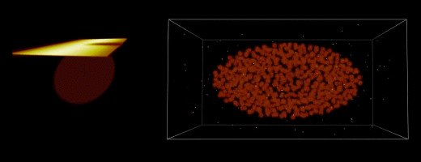

biobeam - Multiplexed wave-optical simulations of light-sheet microscopy¶
Modern microscopes permit to acquire high quality images of large fields of view, which is the result of a decade-long development of computer aided optical design. However, this high image quality can only be obtained at the very surface of biological specimens: when trying to penetrate deeper into biological tissues, light scattering by cells rapidly leads to severe image blur and computers have so far been unable to model the process by which light forms images in such turbid optical environments.
Biobeam is an open source software package that is designed to provide fast methods for in-silico optical experiments with an emphasize on image formation in biological tissues. With biobeam, it is possible to simulate how microscopes record images deep inside scattering biological samples and to reproduce a wide range of optical effects that underlie image blur in tissues. Hence strategies to improve image quality within three-dimensional samples can now be systematically tested by computers.
For instance, the following image depicts the simulation result of the entire image formation process of a light-sheet microscope, including the detoriations that arise in both the illumination and detection path due to the interaction of light with the scattering biological tissue.
{kind=link}
Biobeam is implemented in Python and relies on OpenCL for its GPU-accelerated primitives. It includes modules for
- scalar and vectorial (3D) PSF calculations
- fast beam propagation of arbitrary light fields through a given refractive index map
- the creation of simulated 3D image datasets from ground truth while taking the whole image formation process (illumination/detection) of light-sheet microscopy into account.
Biobeam was conceptualized by M. Weigert and M. Kreysing, and implemented/validated by M. Weigert, K. Subramanian, S. Bundschuh, EW Myers and M. Kreysing.